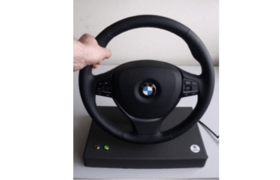
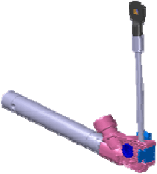
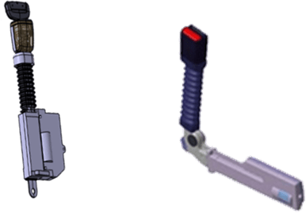
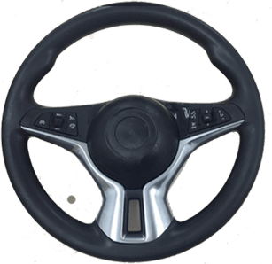

HOD方向盘

通过电容传感器系统探测驾驶员双手是否握在方向盘上，减少不良习惯带来的驾驶事故
- 可为自动泊车等功能提供辅助
- 传感器集成在缝皮方向盘上
- Euro Ncap在2018年4月规定，自动驾驶汽车必 须配备HOD方向盘，且2020年开始强制执行
返回
腰部预紧端片PLP1.5

降低乘员在碰撞事故胸部所承受的压力，臀部位移和大腿承受的压力，以及从安全带下滑出的风险
- 反应时间快速
- 长230mm，宽275mm,高30mm
- 预紧行程：100mm (≥90mm@ATS)
- 锁止距离≤10mm
- 火药技术：MGG
返回
电控升降插锁EBP

电控升降插锁可以在系安全带前，自动上升，便于乘员找到锁扣位置。插上锁舌后，可自动回收
- 快速：乘客能更快速系上安全带
- 便利：可与发光模块结合使用，在黑暗情况下，乘员更容易找到锁扣位置
- 美观：发光模块提升车内氛围和科技感
返回
小尺寸主驾气囊

降低乘员在碰撞事故胸部所承受的压力，臀部位移和大腿承受的压力，以及从安全带下滑出的风险
- 反应时间快速
- 长230mm，宽275mm,高30mm
- 预紧行程：100mm (≥90mm@ATS)
- 锁止距离≤10mm
- 火药技术：MGG
返回